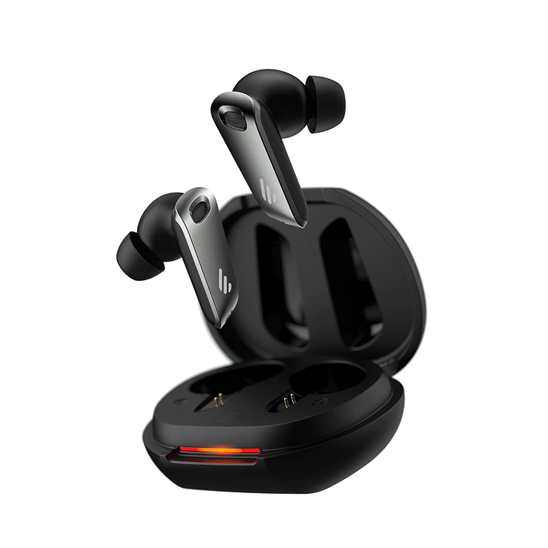

หูฟังมีสายเเละหูฟังไร้สาย

ที่มา Zoundaholic
Edifier neobud pro
Edifier neobud pro
หูฟังไร้สาย เสียงดี คุณภาพสูง คุ้มค่าที่สุดในงบไม่เกิน 2,000 บาท
ราคา: 1,500 บาท

ที่มา Apple store
Apple ear pod
Apple earpod
หูฟังมีสาย หัว Type-c ใช้ได้กับสมาร์ทโฟนเเละเเท็บเเล็ตในปัจจุบัน
ราคา: 790 บาท

QCY H3pro
QCY H3pro
หูฟังไร้สาย ครอบหู น้ำหนักเบา เสียงดี มีANC
ราคา: 1,300 บาท